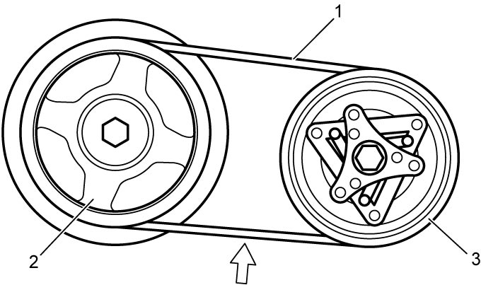

7B
| Compressor Drive Belt Inspection and Adjustment |
M16A Model and D16AA Model
K14C Model
1)Check compressor drive belt (1) for wear, cracks, deformation and contamination. If any defect is found, replace the belt with new one. 
2)Start engine and stop it after 2 or 3 seconds to stabilize compressor drive belt tension.
3)Check compressor drive belt tension by tension meter following the instructions mentioned in the tension meter manual. If compressor drive belt tension is not as specified, replace the belt with new one.

Compressor drive belt tension
Belt in use: 236 – 636 N (24.1 – 64.8 kgf or 53.1 –142.9 lbf)
New belt: 299 – 801 N (30.5 – 81.6 kgf or 67.3 – 180.0 lbf)
Recommended belt tension meter specification
Gates Corporation “507C” or equivalent
| Setting value for belt tension meter “507C” | |
| MASS | 60.0 |
| WIDTH | 1.0 |
| SPAN | 178 |
NOTE:
•For using general belt tension meter (other than Gates Corporation “507C”) refer to the following belt specification values.
—Length: 713 mm (28.1 in.)
—Weight: 43 g (1.5 oz)
—Distance between the contact points of belt and pulley: 178 mm (7.09 in.)
•For the setting of the belt tension meter, follow the operation manual of belt tension meter.—Weight: 43 g (1.5 oz)
—Distance between the contact points of belt and pulley: 178 mm (7.09 in.)

 "Expand image")
| 2. | Crankshaft pulley | 3. | Magnet clutch pulley |